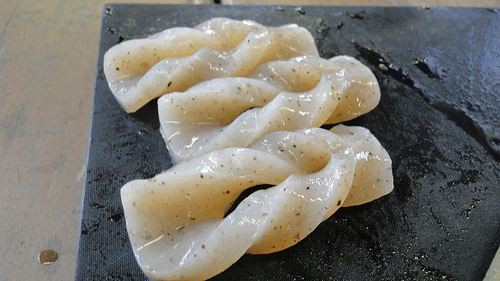
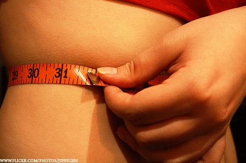
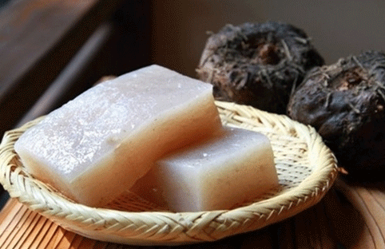
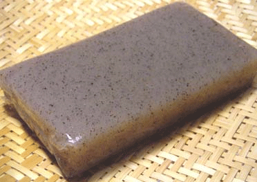

곤약 효능,곤약의 효능 및 곤약 부작용,곤약 칼로리는?
다이어트 식품으로 잘 알려진 곤약이죠
방송에도 자주 등장하고 실제로 낮은 칼로리와 포만감, 변비 개선 등
다이어트 식품으로서의 조건을 두루 갖춘 곤약인데요
그래서 오늘은 곤약의 효능과 더불어 곤약 칼로리 그리고
아무리 좋은 음식이라고 해도 안 좋은 점은 꼭 있겠죠?
곤약 효능을 방해하는 곤약 부작용에 대해 알아보도록 할께요^^

곤약이란?
구약을 건조, 분쇄, 도정해서 만든 만난은 물과 만나서 점성이 있는 콜로이드액이 되는데요
여기에 알칼리성 응고제를 첨가하여 가열한 후 식히면서
반투명의 묵이나 국수의 형태로 만든 것이 식용곤약이라고 합니다.
곤약 효능 및 곤약의 효능
다이어트에 좋아요!

곤약은 95% 이상이 수분으로 이뤄져 있어 칼로리가 매우 낮은데요
때문에 다이어트 시 섭취하면 뛰어난 체중 감량 효과를 볼 수 있다고 해요
곤약을 활용한 요리는 다양하기 때문에 다이어트를 방해하는 재료대신
곤약을 넣으면 배부른 다이어트를 할 수 있다고 해요
변비 안녕히 가~세요!
곤약에는 글루코만난이라는 성분이 들어 있는데요
식이섬유인 글루코만난은 장 운동을 원활하게 만들어 배변활동을 촉진시키기 때문에
변비 증상을 치료하는데는 아주 효과적이라고 합니다.
또한 숙변을 제거해 장 속을 깨끗하게 만들어 주는데요
특히 대장 속 노폐물을 배설시켜 대장암을 예방할 수 있게 해준답니다.
혈당을 낮추는 글루코만난
글루코만난은 천천히 흡수되는 특징이 있는데요
이는 혈당의 증가를 낮춰 당뇨병 치료에 도움을 준다고 합니다.
더불어 글루코만난은 혈액 속 콜레스테롤 수치 개선 효능이 있어
성인병 예방에도 탁월한 효능을 보인다고 하네요.
키 쑥쑥!! 뼈 튼튼!!
이외에도 곤약에는 칼슘이 풍부하게 들어있는데요
칼슘은 골격형성에 도움을 주는 영양소이기 때문에
성장기 청소년이나 골다공증을 앓고 있는 이들이 곤약을 섭취하면 좋다고 합니다.
곤약 칼로리는 어떻게 될까?
곤약은 칼로리가 거의 없는 식품 중 하나인데요
100g당 0~ 5kcal밖에 되지 않고 식이섬유가 많아 포만감을 주기 때문에
다이어트에 아주 좋은 음식이라고 합니다.
|  |
곤약 부작용 곤약 섭취 시 주의할 점
곤약은 식이섬유, 칼슘 외에 다른 영양소를 가지고 있지 않으므로
곤약만 섭취하는 원푸드 다이어트는 절대 안된다고 해요
체내 수분이 빠지고 단백질 섭취가 줄어 탈모가 생기는 등 부작용도 큰데요
또한, 특별한 맛이 없어 양념을 강하게 하면 오히려 식욕을 자극하고,
지방을 흡수하는 성질이 강해 볶아 먹으면 칼로리가 100kcal까지 증가한다고 해요

때문에 반드시 다른 식품과 함께 섭취해야 건강한 체중감량이 가능한데요
다이어트를 위해서는 곤약을 고집하기보다는 우유, 콩, 두부, 생선, 닭 가슴살 등
단백질과 탄수화물, 비타민 등 곤약에 부족한 영양소가 들어있는 음식과 함께 요리해 섭취하는 것이 좋다고 합니다.
이상..
곤약 효능,곤약의 효능 및 곤약 부작용,곤약 칼로리에 대해 알아보았답니다.
늘 건강하고 행복한 시간 보내세요^^